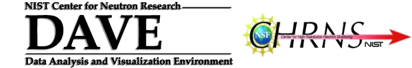

|
|
|
| Home | Live Data | Instruments | CHRNS | Proposals |

DAVE Home Features Changelogs Screenshots Downloads Citations DAVE/IDL documentation
- Course notes
- Application Development in IDL I given by Robert M. Dimeo on February 28-March 2, 2005
Course Notes:Application Development in IDL I
Example code and programs: Application Development in IDL I Programs.
- Application Development in IDL II given by Robert M. Dimeo on February 3-5, 2003
Course Notes:Application Development in IDL II
Example code and programs: Application Development in IDL II Programs.
- DAVE 2 course notes given by Richard Tumanjong Azuah on March 4-6, 2008.
DAVE 2: Introduction to programing using the iTool framework
Code referenced in chapter 1: simpleclasses.zip, inheritedclasses.zip
The remaning code referenced are part of the DAVE project.
- DAVE PDF internal documentation:
- Diatomic Calculation diatomiccalc.pdf
- HFBS Data Reduction user manual hfbsreduction.pdf
- Methyl Calculations methylcalc.pdf
- Peak Analysis (PAN) user manual pandoc.pdf
- PAN user macros manual pan_user_macros.pdf
- Spurion Calculator spurcalc.pdf
- FCS data reduction user manual fcs_manual.pdf
- NSE data reduction user manual nse_manual.pdf
- ASCII file reader user manual ascii_help.pdf
- Mslice user manual dcs_mslice.pdf
- Gaussian98 user manual gaussian1.pdf
- RAINS user manual rains_models.pdf
- Template and brief instructions for including a GUI into DAVE (version 1.x)
- To have additional functions included in PAN, you have to define one in IDL as described briefly in PAN_userfunction.pdf or use this function template as a guide. The IDL source code can then be forwarded to us for inclusion in the next build of DAVE if considered appropriate.
Documentation for the stand-alone version of PAN (requires an IDL license) can be found here . Most of it is also relevant to the DAVE version of PAN so do check it out.
If you reduced, analyzed or visualized your data using DAVE, please acknowledge its use by including the following reference:
[1] DAVE: A comprehensive software suite for the reduction, visualization, and analysis of low energy neutron spectroscopic data, R.T. Azuah, L.R. Kneller, Y. Qiu, P.L.W. Tregenna-Piggott, C.M. Brown, J.R.D. Copley, and R.M. Dimeo, J. Res. Natl. Inst. Stan. Technol. 114, 341 (2009).Disclaimer
This software was developed at the National Institute of Standards and Technology at the NIST Center for Neutron Research by employees of the Federal Government in the course of their official duties. Pursuant to title 17 section 105* of the United States Code this software is not subject to copyright protection and is in the public domain. The DAVE software package is an experimental neutron scattering data reduction, visualization, and analysis system. NIST assumes no responsibility whatsoever for its use, and makes no guarantees, expressed or implied, about its quality, reliability, or any other characteristic. The use of certain trade names or commercial products does not imply any endorsement of a particular product, nor does it imply that the named product is necessarily the best product for the stated purpose. We would appreciate acknowledgment if the software is used.
*Subject matter of copyright: United States Government works
Copyright protection under this title is not available for any work of the United States Government, but the United States Government is not precluded from receiving and holding copyrights transferred to it by assignment, bequest, or otherwise.
Acknowledgments
This work is based upon activities supported by the National Science Foundation under Agreement No. DMR-0944772 (previously DMR-0454672 for period 2005 to 2010).
The DAVE development team consists of Richard Azuah, John Copley, Rob Dimeo, Sungil Park, Seung-Hun Lee, Alan Munter, Larry Kneller, Yiming Qiu, Inma Peral, Craig Brown, Paul Kienzle and Philip Tregenna. Additional open source utilities written by David Fanning, Ronn Kling, Mark Piper, Michael D. Galloy, and Craig Markwardt have been incorporated into some of the DAVE programs as well.
Last modified 18-February-2011 by website owner: NCNR (attn: Richard Azuah)